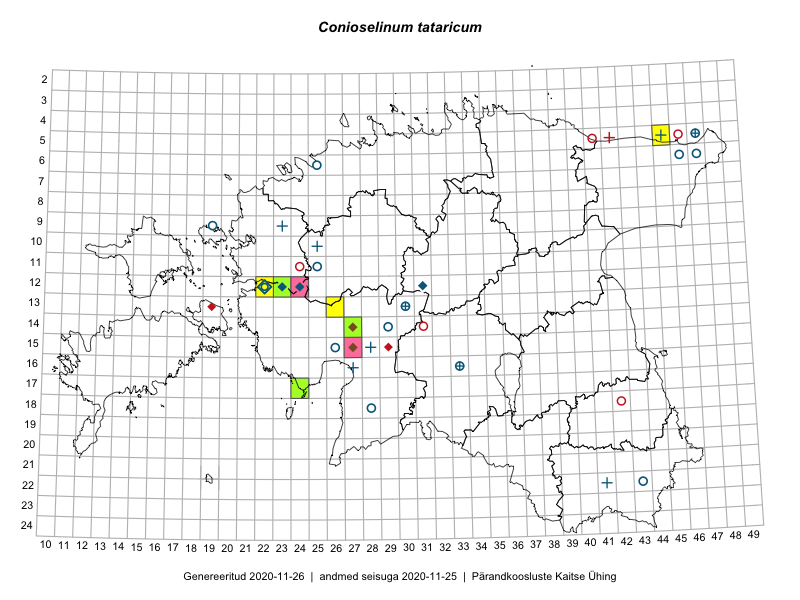

Conioselinum tataricum
Uuendatud: 2016-12-01
Kaardile koondatud taksonid: Conioselinum tataricum Hoffm.

Kaart põhineb 5 kirjel.
Viited andmebaasikirjetele
- Toomas Kukk, Thea Kull, Timo Luhamäe, Ott Luuk, Peedu Saar: 2015-06-28: 13-26: ala
- Toomas Kukk, Thea Kull, Timo Luhamäe, Ott Luuk, Peedu Saar: 2015-06-28: 13-26: GPS punkt
- Tiit Hallikma, Toomas Kukk: 2015-07-21: 05-45: ala
- Tiit Hallikma, Toomas Kukk: 2015-07-21: 05-45: GPS punkt
- Tiit Hallikma, Tõnu Ploompuu: 2016-07-06: 17-24: ala